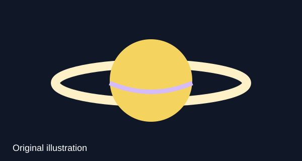

Saturn
Saturn is the sixth planet from the Sun and is famous for its large ring system. NASA says Saturn is mostly made of hydrogen and helium. Reference: NASA Saturn

Image note: This is an original SVG illustration made for this project.
Video: NASA at Saturn
This short NASA video explains the Cassini mission at Saturn. Reference: NASA YouTube video with timestamp